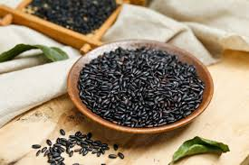

Inicio
Sobre mí
Recetas
Contacto
Otras Cosas
Arroz Negro

⏰
Tiempo total:
45 minutos
Ingredientes
2 litros de caldo de frijol
250 g arroz
40 g manteca
4 hojas de epazote
2 dientes de ajo
2 chiles serranos
1 cebolla
sal
Preparación
1.
Calienta el caldo de frijol a fuego medio.
2.
Añade el arroz y cocina a fuego bajo hasta que esté tierno.
3.
Derrite la manteca en una sartén aparte.
4.
Fríe el ajo, los chiles y la cebolla en la manteca.
5.
Añade el epazote y la mezcla de manteca al arroz.
6.
Agrega sal al gusto y sirve caliente.
Autor: Chef Tradicional
Consejos:
Asegúrate de usar caldo de frijol recién hecho para un mejor sabor.
Recetas